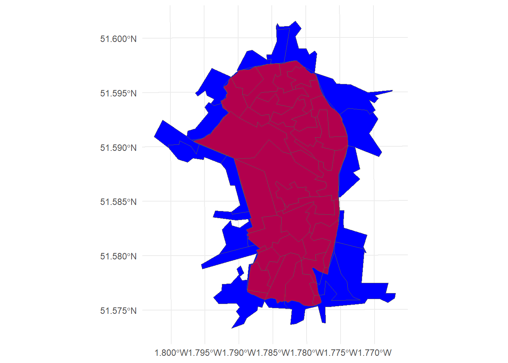

library(fs)
library(here)
library(vroom)
library(stringr)
library(purrr)
library(sf)
library(dplyr)
library(ggplot2)
library(magrittr)
library(lobstr)
library(tidyr)
library(scales)
library(forcats)Jesus Shaped People: St Phillip, Upper Stratton
Housekeeping
Libraries
Data, files and paths
Get shapes
Get shapes for requested areas
Read in both .kml files, then bind all three shapes into one sf object.
requested_area <- read_sf(
here("parish-shapes", "coe-parishes_2022.geojson"),
query = "SELECT parish_code, parish_name FROM \"coe-parishes_2022\" WHERE parish_code = 550168")Get shapes for small areas
oa <-
read_sf(here("civic-areas", "2021_oa-boundaries_england-wales_generalised_clipped")) |>
select(oa_2021_code = OA21CD)Reproject requested shapes
requested_area <- st_transform(requested_area, st_crs(oa))Get statistics
Get diocesan stats
Get stats for bristol
stat_names <- c("age-five-year", "ethnicity", "general-health", "household-composition", "religion")
diocesan_stats <-
map(stat_names,
function(stat_name){
file_name <- str_c(params[["nation"]], "_", stat_name, ".csv")
file_path <- here("diocesan-stats", file_name)
vroom(file_path, show_col_types = FALSE) |>
filter(diocese == str_to_title(params[["diocese"]])) |>
select(-diocese)
})
names(diocesan_stats) <- str_replace_all(stat_names, "-", "_")Get national stats
oa_stats <-
map(stat_names,
function(stat_name){
file_name <- str_c("england-wales_", stat_name, "_oa_2021.RDS")
file_path <- here("small-area-stats", file_name)
readRDS(file_path)
})
names(oa_stats) <- str_replace_all(stat_names, "-", "_")
## NB: about 5 'general-health' stats contain NA values for the
## whole of England. This stops those from making this crash.
oa_stats$general_health |>
filter(if_any(where(is.numeric), is.na))# A tibble: 3 × 6
oa_2021_code very_good good fair bad very_bad
<chr> <dbl> <dbl> <dbl> <dbl> <dbl>
1 E00062004 166 NA NA NA NA
2 E00188188 NA 96 34 6 2
3 E00044447 NA 96 25 11 1national_stats <-
map(oa_stats,
\(x){
filter(x, if_all(where(is.numeric), negate(is.na))) |>
summarise(across(where(is.numeric), sum))
})Format Data
Filter intersecting civic areas
We only need to deal with output areas that intersect the shapes we’re analysing
request_union <- st_union(requested_area)
intersecting_oa <-
st_intersects(oa, request_union, sparse = FALSE) |>
as.vector()
oa <- filter(oa, intersecting_oa)
oa <- mutate(oa, oa_area = st_area(geometry))
nrow(oa)[1] 51Get intersections
intersections <-
st_intersection(requested_area, oa)Warning: attribute variables are assumed to be spatially constant throughout
all geometriesintersections <- mutate(intersections,
intersection_area = st_area(geometry),
oa_in_area = intersection_area / oa_area)Test plot
ggplot() +
geom_sf(data = oa, fill = "blue") +
geom_sf(data = intersections, fill = "red", alpha = 0.7, inherit.aes = FALSE) +
theme_minimal()
Save shape data
grd <- dir_create(here("geospatial-reporting-data"))
hayes <- dir_create(grd, "st-phillip-upper-stratton_2023-09-11")
## using this because write_sf appears to be borked
st_write(oa, here(hayes, "st-phillip-upper-stratton_oa.geojson"),
delete_dsn = TRUE)Deleting source `C:/Users/david.lovell/OneDrive - Church Army/Documents/repos/area-analysis/england/geospatial-reporting-data/st-phillip-upper-stratton_2023-09-11/st-phillip-upper-stratton_oa.geojson' failed
Writing layer `st-phillip-upper-stratton_oa' to data source
`C:/Users/david.lovell/OneDrive - Church Army/Documents/repos/area-analysis/england/geospatial-reporting-data/st-phillip-upper-stratton_2023-09-11/st-phillip-upper-stratton_oa.geojson' using driver `GeoJSON'
Writing 51 features with 2 fields and geometry type Multi Polygon.st_write(requested_area, here(hayes, "st-phillip-upper-stratton.geojson"),
delete_dsn = TRUE)Deleting source `C:/Users/david.lovell/OneDrive - Church Army/Documents/repos/area-analysis/england/geospatial-reporting-data/st-phillip-upper-stratton_2023-09-11/st-phillip-upper-stratton.geojson' failed
Writing layer `st-phillip-upper-stratton' to data source
`C:/Users/david.lovell/OneDrive - Church Army/Documents/repos/area-analysis/england/geospatial-reporting-data/st-phillip-upper-stratton_2023-09-11/st-phillip-upper-stratton.geojson' using driver `GeoJSON'
Writing 1 features with 2 fields and geometry type Multi Polygon.Join intersections to requested shapes
intersections <-
as_tibble(intersections) |>
select(parish_name, oa_2021_code, oa_in_area) |>
mutate(oa_in_area = unclass(oa_in_area))
requested_area <-
as_tibble(requested_area) |>
select(parish_name) |>
summarise(.by = parish_name)
requested_area <- left_join(requested_area, intersections, by = "parish_name")
head(requested_area)# A tibble: 6 × 3
parish_name oa_2021_code oa_in_area
<chr> <chr> <dbl>
1 Penhill: St Peter E00078414 0.955
2 Penhill: St Peter E00078415 0.955
3 Penhill: St Peter E00078424 0.982
4 Penhill: St Peter E00078425 1.00
5 Penhill: St Peter E00078426 1.00
6 Penhill: St Peter E00078427 1.00 Calculate statistics
Format requested shapes as list
requested_area <- group_by(requested_area, parish_name)
shape_keys <-
group_keys(requested_area) |>
unlist()
request_list <-
group_split(requested_area) |>
set_names(shape_keys)
rm(shape_keys)
lobstr::tree(request_list, max_depth = 1)S3<vctrs_list_of/vctrs_vctr/list>
└─Penhill: St Peter: S3<tbl_df/tbl/data.frame>...Map across shapes & stats
requested_area_stats <-
map(request_list,
function(x){
map(oa_stats,
function(y){
left_join(x, y, by = "oa_2021_code") |>
mutate(across(where(is.numeric), \(a) a * oa_in_area)) |>
select(-oa_in_area) |>
summarise(across(where(is.numeric), sum))
})
})
lobstr::tree(requested_area_stats, max_depth = 2)<list>
└─Penhill: St Peter: <list>
├─age_five_year: S3<tbl_df/tbl/data.frame>...
├─ethnicity: S3<tbl_df/tbl/data.frame>...
├─general_health: S3<tbl_df/tbl/data.frame>...
├─household_composition: S3<tbl_df/tbl/data.frame>...
└─religion: S3<tbl_df/tbl/data.frame>...Combine all areas
all_areas <- c(requested_area_stats,
list(diocese = diocesan_stats),
list(nation = national_stats))
lobstr::tree(all_areas, max_depth = 2)<list>
├─Penhill: St Peter: <list>
│ ├─age_five_year: S3<tbl_df/tbl/data.frame>...
│ ├─ethnicity: S3<tbl_df/tbl/data.frame>...
│ ├─general_health: S3<tbl_df/tbl/data.frame>...
│ ├─household_composition: S3<tbl_df/tbl/data.frame>...
│ └─religion: S3<tbl_df/tbl/data.frame>...
├─diocese: <list>
│ ├─age_five_year: S3<spec_tbl_df/tbl_df/tbl/data.frame>...
│ ├─ethnicity: S3<spec_tbl_df/tbl_df/tbl/data.frame>...
│ ├─general_health: S3<spec_tbl_df/tbl_df/tbl/data.frame>...
│ ├─household_composition: S3<spec_tbl_df/tbl_df/tbl/data.frame>...
│ └─religion: S3<spec_tbl_df/tbl_df/tbl/data.frame>...
└─nation: <list>
├─age_five_year: S3<tbl_df/tbl/data.frame>...
├─ethnicity: S3<tbl_df/tbl/data.frame>...
├─general_health: S3<tbl_df/tbl/data.frame>...
├─household_composition: S3<tbl_df/tbl/data.frame>...
└─religion: S3<tbl_df/tbl/data.frame>...all_areas <-
imap(all_areas,
\(area_list, area_name){
map(area_list,
\(x){
neat_area_name <- str_to_lower(area_name)
mutate(x, area = neat_area_name) |>
relocate(area)
}) })
### Parrallel-map across each list item, reducing their elements into a single tibble
all_areas <- pmap(all_areas, \(...) reduce(list(...), rbind))
all_areas <- map(all_areas,
\(x){
mutate(x, area =
ordered(area) |>
fct_inorder())
})Transform data
Make percentages
all_areas_abs <- all_areas
all_areas_rel <-
map(all_areas,
\(x){
rowwise(x) |>
mutate(across(
where(is.numeric),
\(a) a / sum(c_across(where(is.numeric)))
))
})
all_areas[[1]][1:4]# A tibble: 3 × 4
area age_4_years_and_under age_5_9_years age_10_14_years
<ord> <dbl> <dbl> <dbl>
1 penhill: st peter 865. 925. 798.
2 diocese 58969. 63084. 61183.
3 nation 3232762 3524686 3596135 rowSums(all_areas[[1]][,-1])[1] 10962.31 1064380.08 59598300.00Pivot Longer
all_areas_rel <- map(all_areas_rel,
\(x){
pivot_longer(x,
cols = -area,
names_to = "statistic",
values_to = "proportion")
})
all_areas_abs <- map(all_areas_abs,
\(x){
pivot_longer(x,
cols = -area,
names_to = "statistic",
values_to = "proportion")
})Save data
save_dir <- dir_create(here("comparative-tables"))
saveRDS(all_areas_rel, here(save_dir, "2023-09-11_st-phillip-upper-stratton_proportions.RDS"))
saveRDS(all_areas_abs, here(save_dir, "2023-09-11_st-phillip-upper-stratton_population.RDS"))